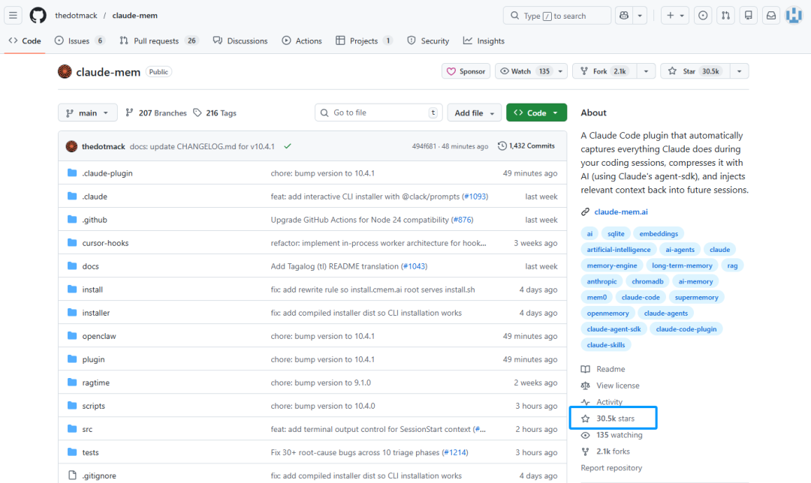
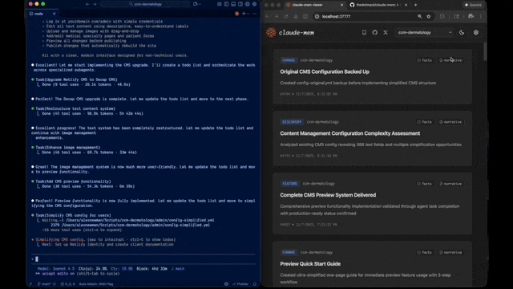
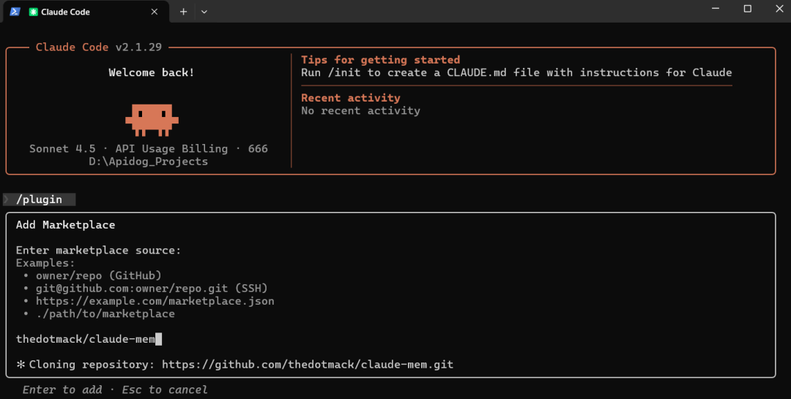
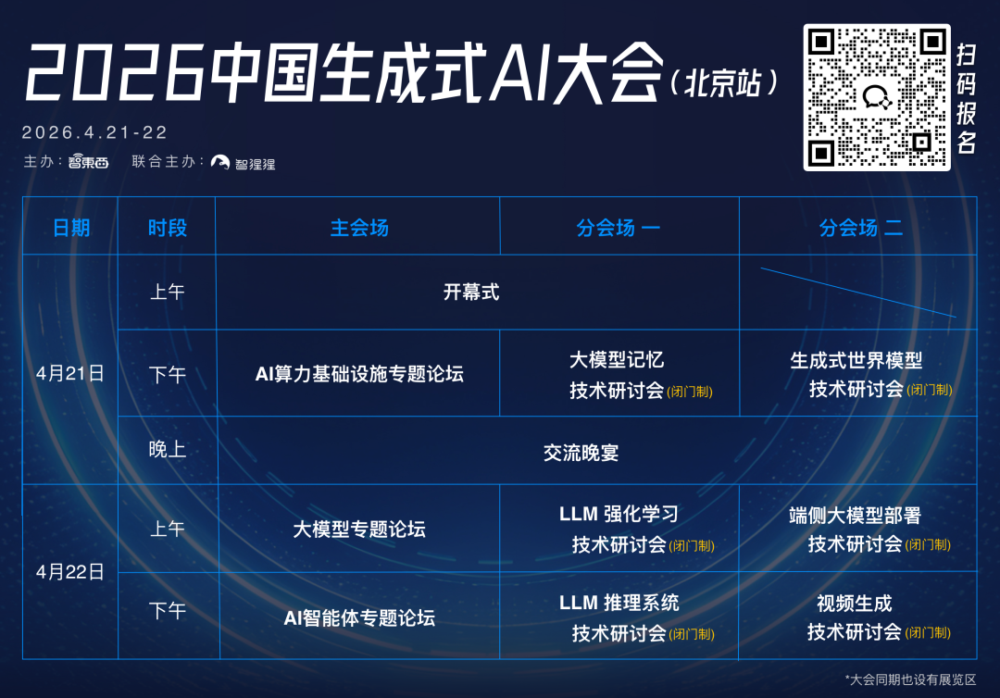

智猩猩AI整理
重度依赖 Claude Code 等编程智能体的开发者，大多都在为一个绕不开的痛点而抓狂：AI助手总是“阅后即焚”，跨会话失忆严重。
每次开启一个新的会话， Claude Code 就像一张白纸。昨天刚敲定的架构设计、上周踩过的 API 坑、团队的代码规范，它统统不记得了。于是只好从头复制粘贴历史上下文、重复解释需求。这不仅浪费了大量开发时间，更是在无形中白白烧掉了大量的 Token 额度，还破坏了工作流程的连贯性。
目前，开发者只能通过手动维护 CLAUDE.md 文件、在独立文档中记录笔记，或是在每次会话开始时重新说明项目上下文来勉强应对。这些方式脆弱、耗时，且永远无法完整保留开发过程中的全部信息。
因此，今天要给大家介绍一款专为 Claude Code 打造的持久化内存压缩插件Claude-Mem，它会自动监听每一次工具调用，将输出压缩为可搜索的语义化记忆，并在需要时智能提取相关上下文。该项目在github上已收获 30.5k Stars。

项目地址：
https://github.com/thedotmack/claude-mem
01
项目介绍
Claude-Mem 通过自动捕获工具输出（通常为 1000～10000 个 Token），并借助 Claude Agent SDK 将其压缩为约 500 Token 的语义化观测记录。这些记录会按类型分类（决策、Bug 修复、功能、重构、发现、变更），并打上相关概念与文件引用标签，随后存入具备全文检索能力的本地 SQLite 数据库。
将语义摘要提供给后续会话，从而实现跨会话上下文的无缝保留，让 Claude Code 在会话结束或重新连接后也能保持对项目知识的连续性。

Claude-Mem 包含以下六个核心组件：
（1）插件钩子： 用于捕获生命周期事件，共 6 个钩子：
（2）智能安装：带缓存的依赖检查器（包含预钩子脚本，在 context-hook 之前运行。
（3）Worker 服务：通过 Claude Agent SDK 处理观察数据压缩成结构化记忆， 并暴露 HTTP API（默认 37777 端口，含 10 个搜索端点）。
（4）数据库层： 存储会话和观察记录（通过SQLite 、 FTS5 和 ChromaDB）。
（5）mem-search Skill ：基于技能的搜索，支持渐进式披露（v5.4.0+ 版本）。
（6）查看器 UI：基于 Web 的实时记忆流可视化界面。
02
使用方法
Claude-Mem 需要 Node.js 18.0.0 或更高版本、支持插件的最新版 Claude Code，依赖 Bun 作为 JavaScript 运行时和进程管理器（若缺失会自动安装）。SQLite 3 已内置集成，用于实现持久化存储。该插件支持跨平台运行，可适配 Windows、macOS 和 Linux 系统。
（1）快速安装
在终端中启动新的 Claude Code 会话并输入以下命令:
/plugin marketplace add thedotmack/claude-mem/plugin install claude-mem

（2）源码安装
若需进行开发或测试，可从 GitHub 克隆源代码并自行构建：
git clone https://github.com/thedotmack/claude-mem.gitcd claude-memnpm installnpm run buildnpm run worker:start
03
总结
claude-mem 通过给 Claude Code 装上“长期记忆”，彻底改变了开发者与 AI 编程助手的协作模式。开发者不再需要每天重复建立上下文，也不用担心重要的技术决策在重启后凭空消失。
END
✦
✦
大会推荐
✦

✦
✦
入群申请
✦

智猩猩矩阵号各专所长，点击名片关注